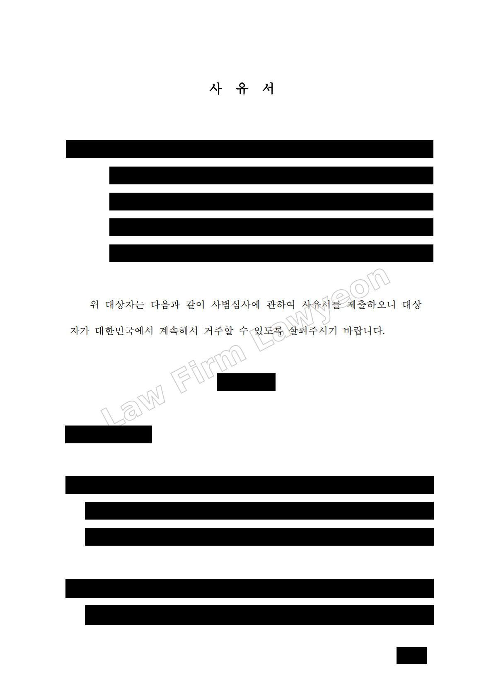
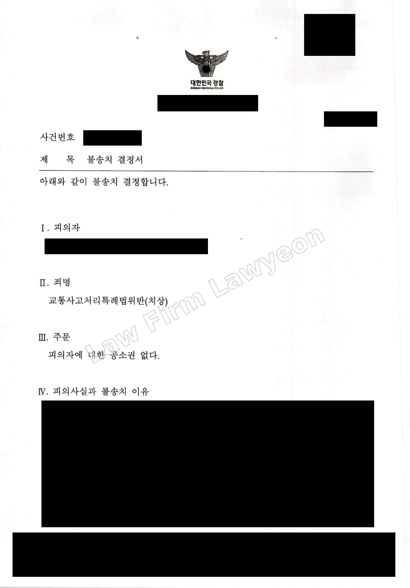

Lawyeon represented a marriage immigrant in an immigration review following a KRW 4 million fine for obstruction of official duties. The client was allowed to remain in Korea without a departure order.
Payment of a criminal fine does not prevent an immigration review from resulting in a departure or deportation order. The client’s KRW 4 million fine met the threshold for a departure order under the Review and Decision Criteria for Foreign Nationals with Final Criminal Fines.
The client was residing in Korea on an F-6 marriage immigration visa as the spouse of a Korean national when convicted of obstruction of official duties. After the judgment became final and the fine was paid, the client had to respond to the immigration review. At the time, the client's spouse was in custody, leaving the client to care directly for their young Korean children.
Lawyeon examined the circumstances of the offence and the criminal penalty. We explained that the client was a first-time offender, that the offence was an isolated and unplanned incident, and that the client showed remorse, supporting our submission that the risk of reoffending was low. We also presented the humanitarian grounds for continued residence: with the spouse unable to provide care, the client's departure would leave the minor children without the care and protection they needed.
During the review, a separate traffic accident case that had already been closed was still listed as under investigation. To prevent it from being assessed as an additional pending case, Lawyeon confirmed the outcome with the responsible police unit and submitted its decision not to refer the case to prosecutors.
Following the immigration review, the client signed a pledge to comply with Korean law and was allowed to continue residing in Korea without a departure order.

